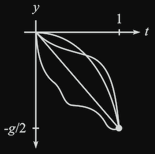
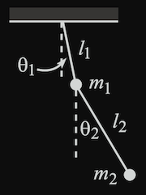
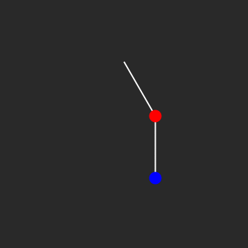
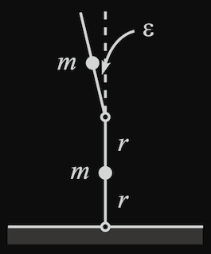

Lagrangian Mechanics
Table of Contents
- Overview
- Equation of Motion
- Principle of Stationary Action
- Euler-Lagrange Equation
- Relationship to Newton’s Second Law
- Applications
Overview
Equation of Motion
The equations of motion are foundational to our understanding of physics, describing how systems evolve over time under the influence of forces. In classical mechanics, Newton’s second law, $F=ma$, provides a straightforward yet powerful framework: it relates the motion of an object to the forces acting upon it, allowing us to predict trajectories and dynamics from the motion of planets to the flight of a baseball. However, as our understanding of physics deepened, the equations of motion took on even greater significance, revealing connections between seemingly disparate phenomena and embodying deeper principles about the universe.
At their core, the equations of motion are more than just tools for prediction; they embody the fundamental symmetries and conservation laws that govern nature. For instance, Lagrangian mechanics reframes the equations of motion not in terms of forces but through energy $––$ specifically, the difference between kinetic and potential energy, known as the Lagrangian whose details are provided below. This perspective is far more general, providing a bridge to more advanced areas of physics, including quantum mechanics and relativity. In this framework, the equations of motion are derived elegantly from the principle of least action, a profound idea that suggests the paths taken by physical systems are those for which a quantity called “action” is minimized or stationary.
This shift in perspective underscores the deeper importance of the equations of motion. They are not merely equations to solve; they reveal how the universe inherently organizes itself. Whether describing the deterministic motion of classical objects or the probabilistic evolution of quantum systems, the equations of motion encapsulate the predictive power and universality of physical laws. By understanding these equations, we gain not only the ability to describe how things move but also a glimpse into the fundamental principles—such as the principle of least action—that reflect the elegance and simplicity of nature.
Principle of Stationary Action
The principle of stationary action is a profound and unifying idea in physics that reveals how nature operates efficiently. It states that the motion of a physical system between two points in time follows a path for which the action is stationary—typically minimized—compared to all other conceivable paths.1 This principle applies universally, from the orbits of planets in celestial mechanics to the behavior of quantum particles, making it one of the most fundamental concepts in science. What makes it extraordinary is its ability to derive the equations of motion for systems in a way that highlights the intrinsic elegance of physical laws, emphasizing energy relationships rather than forces. Erwin Schrödinger himself was even inspired by this work which led to the development of the Schrödinger equation $–$ the equation which governs how probabilistic wave functions of quantum particles evolve through time.
The action is a scalar quantity, defined mathematically as the integral of the Lagrangian over time. The Lagrangian, $\mathcal{L}$, represents the difference between a system’s kinetic energy $(T)$ and potential energy $(U)$:
$$\mathcal{L} = T - U$$
The action, $S$, is then given by:
$$S \equiv \int_{t_1}^{t_2} \mathcal{L}(q(t), \dot q(t), t) dt$$
Here, $t_1$ and $t_2$ represent the initial and final times of the system, $\mathcal{L}$ encapsulates the system’s dynamics at every instant within this interval, and $q(t)$ is the equation of motion. Integrals like the one above are called functionals, and $S$ is sometimes denoted as $S[q(t)]$. This notation tries to make clear that $S$ depends on, not a number, but rather the entire trajectory, $q(t)$. This kind of mathematics is referred to as calculus of variations (or variational calculus). The principle of stationary action asserts that the physical trajectory of the system is the one that makes $S$ stationary. In practical terms, this means that small variations in the path around the true trajectory do not significantly change $S$, leading to the Euler-Lagrange equations, which govern the motion of the system and what we’ll touch on in the next section.
What makes this principle so powerful is its generality. In classical mechanics, it reproduces Newton’s laws of motion. In optics, it relates to Fermat’s principle, where light takes the path of least time. In quantum mechanics, it lays the foundation for Feynman’s path integral formulation, where every possible path contributes to the behavior of particles, weighted by their action. Therefore, the principle of stationary action serves as a unification, revealing that the laws of physics are deeply rooted in optimization and symmetry.2
For example, consider a ball dropped from rest, and consider the function $y(t)$ for $0 \le t \le 1$. Assume $y(0) = 0$ and $y(1) = -g/2$ (which comes from $y = -gt^2/2$).

A number of different trajectories can be considered and each can be given a scalar value (i.e., action). We have tools to help us determine which trajectory yields a stationary value $–$ ultimately giving us the desired equation of motion.
Euler-Lagrange Equation
The following theorem allows us to connect the principle of stationary action to the aforementioned Euler-Lagrange equations:
Theorem
If the function $x_0(t)$ yields a stationary value (that is, a local minimum, maximum, or saddle point) of $S$, then
$$\frac{\partial \mathcal{L}}{\partial x_0}=\frac{d}{dt}\frac{\partial \mathcal{L}}{\partial \dot{x}_0}$$
We consider the class of functions whose endpoints are fixed. That is, $x(t_1) = x_1$ and $x(t_2) = x_2$.
Now, we can essentially replace Newton’s Second Law of Motion, $F=ma$, by the following principle
Hamilton’s Principle
The path of a particle is the one that yields a stationary value of the action, $S$.
This says if and only if we have a stationary value, then the Euler-Langrage equations hold and the E-L equations are essentially the same as $F=ma$. We will see examples of describing a system in terms of its energy instead of forces which allows the search for the equation of motion.3
Relationship to Newton’s Second Law
Since Lagrangian mechanics is a reformulation of Newtonian mechanics, there are a clear relationship between the concepts they use. The equations below give an idea of how frameworks are connected.
$$F = ma = m\dot{v} = \dot{p}$$
$$\Delta T = T_2 - T_1 = \int_{1}^{2}\textbf{F} \cdot d\textbf{r}$$
$$U(\textbf{r}) = -\int_{r_0}^r F(\textbf{r}’) \cdot d\textbf{r}’$$
$$\frac{\partial \mathcal{L}}{\partial q_i}=\frac{d}{dt}\frac{\partial \mathcal{L}}{\partial \dot{q}_i}$$ $$\left( \frac{\partial \mathcal{L}}{\partial q_i} = F_i \right) \text{ and } \left( \frac{\partial \mathcal{L}}{\partial \dot{q}_i} = p_i \right)$$ These are referred to as generalized forces and generalized momenta. I hope to add a discussion about generalized ignorable coordinates and conservation laws but this would be a different note.
Applications
Example 1: Pendulum with Oscillating Support
Problem $––$ A pendulum consists of a mass $m$ and a massless stick of length $l$. The pendulum support oscillates horizontally with a position given by $x(t) = A \cos{(\omega t)}$. What is the general solution for the angle of the pendulum as a function of time?
The key is to describe the position of the mass in $(x,y)$ coordinates. This is given by: $$(X,Y)_m = (x+l \sin{\theta}, -l \cos{\theta})$$ or with time dependent variables: $$(X(t),Y(t))_m = (x(t)+l \sin{(\theta(t))}, -l \cos{(\theta(t))})$$
We can take a derivative of the position vectors to obtain the velocity (or the square of velocity): $$V^2 = \dot X^2 + \dot Y^2 = l^2 \dot \theta^2 + \dot x^2 + 2 l \dot x \dot \theta \cos{\theta}$$
The Lagrangian can then be written as: $$\mathcal{L} = \frac{1}{2} m (l^2 \dot \theta^2 + \dot x^2 + 2 l \dot x \dot \theta \cos{\theta}) + mgl\sin{\theta}$$
The Euler-Lagrange equation for $\theta$ is therefore: $$\frac{d}{dt}(m l^2 \dot \theta+ml\dot x \cos{\theta})=-ml\dot x \dot \theta \sin{\theta}-m g l \sin{\theta}$$
The equation of motion is given by: $$l \ddot \theta+\ddot x \cos{\theta}=-g \sin{\theta}$$
When we plug in the given expression for $x(t)$, the equation of Motion of Mass $m$ becomes: $$l \ddot \theta - A \omega^2 \cos{(\omega t)} \cos{\theta}+g \sin{\theta}=0$$
We can use a numerical solution to the differential equation with the following conditions: $l=7$, $g=9.81$, $A=1$, $\omega = \gamma \text{ (golden ratio)}$. I made the animation below using these initial conditions.

Example 2: Double Pendulum

Problem $––$ A double pendulum of two masses, $m_1$ and $m_2$, and two rods of lengths $l_1$ and $l_2$. Find the equations of motion.
$$ \begin{align} (x,y)_1 &= (l_1 \sin \theta_1, -l_1 \cos \theta_1) \\ (x,y)_2 &= (l_1 \sin \theta_1 + l_2 \sin \theta_2, -l_1 \cos \theta_1 - l_2 \cos \theta_2) \\ v_1^2 &= l_1^2 \dot{\theta}_1^2 \\ v_2^2 &= l_1^2 \dot{\theta}_1^2 + l_2^2 \dot{\theta}_2^2 + 2 l_1 l_2 \dot{\theta}_1 \dot{\theta}_2 (\cos \theta_1 \cos \theta_2 + \sin \theta_1 \sin \theta_2)\\ \end{align} $$
$$ \mathcal{L} = \frac{1}{2} m_1 l_1^2 \dot{\theta}_1^2 + \frac{1}{2} m_2 \left( l_1^2 \dot{\theta}_1^2 + l_2^2 \dot{\theta}_2^2 + 2 l_1 l_2 \dot{\theta}_1 \dot{\theta}_2 \cos (\theta_1 - \theta_2) \right) + m_1 g l_1 \cos \theta_1 + m_2 g (l_1 \cos \theta_1 + l_2 \cos \theta_2) $$
The equations of motion are given by the Euler-Lagrange equations:
$$\frac{\partial \mathcal{L}}{\partial \theta_1}=\frac{d}{dt}\frac{\partial \mathcal{L}}{\partial \dot{\theta}_1}$$
$$\frac{\partial \mathcal{L}}{\partial \theta_2}=\frac{d}{dt}\frac{\partial \mathcal{L}}{\partial \dot{\theta}_2}$$
\begin{align} 0 &= (m_1 + m_2) l_1^2 \ddot{\theta}_1 + m_2 l_1 l_2 \ddot{\theta}_2 \cos (\theta_1 - \theta_2) + m_2 l_1 l_2 \dot{\theta}_2^2 \sin (\theta_1 - \theta_2) + (m_1 + m_2) g l_1 \sin \theta_1 \\ 0 &= m_2 l_2^2 \ddot{\theta}_2 + m_2 l_1 l_2 \ddot{\theta}_1 \cos (\theta_1 - \theta_2) - m_2 l_1 l_2 \dot{\theta}_1^2 \sin (\theta_1 - \theta_2) + m_2 g l_2 \sin \theta_2 \\ \end{align}
The nonlinear double pendulum was solve using numerical methods of the system of differential equation in Mathematica. 
Practice Problem
Here is a fun problem to practice with.

References
-
Principle of stationary action is sometimes called principle of “least” action but this is a misnomer since it is not always the case that the stationary value is a minimum. For example, the harmonic oscillator with $\mathcal{L} = \frac{1}{2}m \dot{x}^2 - \frac{1}{2}k x^2$ is sometimes a minimum and sometimes a saddle point depending on the situation. ↩︎
-
There is more that can be said with respect to symmetry in terms of Noether’s theorem but I’ll save this for another note. ↩︎
-
There also exists a Hamiltonian formulation of Classical Mechanics that takes advantage of its own coordinate system called Canonical Coordinates. ↩︎